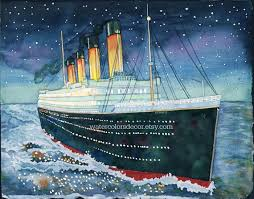
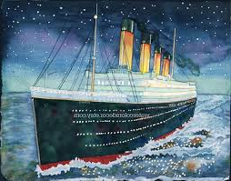

Titanic: Crew and Classes, Survivors and Victims Visualisation


Crew & Class
Gender
Age Group
Survived
Gender Across Crew & Class
Total Persons Per Group
Survival By Gender
Survival By Crew & Class
Survival By Age Group